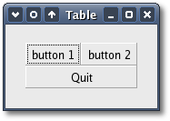

|
Tables
Apart
from boxes, the other
container commonly used to pack widgets is
a table.
Tables, like boxes are 'no window' widgets so they are invisible. You
can use a table to arrange widgets in rows and columns, making it easy
to align many widgets next to each other, horizontally and vertically.
An instance of Gtk::Table can be created with the following constructor:
Table(unsigned
int rows, unsigned
int columns, bool
homogeneous = false);
The 'rows' argument is the
number of rows the new table should have and 'columns' is the number of
columns. The 'homogeneous'
argument sets whether all cells in the table should be resized to the
size of the largest cell. The default value is false.
The
rows and columns are laid out
from 0 to n,
where n was the number specified in the Gtk::Table constructor.
So,
if you specify rows = 2 and columns = 2, the layout would look
like this:
0
1
2
0+----------+----------+
|
|
|
1+----------+----------+
|
|
|
2+----------+----------+
Note that the coordinate system
starts in the
upper left hand corner.
Widgets can be placed in a table using the table's attach method:
void
attach
(
Widget& child,
unsigned
int
left_attach,
unsigned
int
right_attach,
unsigned
int
top_attach,
unsigned
int
bottom_attach,
AttachOptionsField xoptions = EXPAND |
FILL,
AttachOptionsField yoptions = EXPAND |
FILL,
unsigned
int
xpadding = 0,
unsigned
int
ypadding = 0
);
The 'child' argument is a
widget to add to the table. The 'left_attach'
and 'right_attach' arguments
are the column numbers to attach to the left and right side of the
widget respectively. The 'top_attach'
and 'bottom_attach' arguments
are the column numbers to attach to the top and bottom of the
widget respectively. The 'xoptions'
and 'yoptions' arguments
specify how the widget is resized, horizontally and vertically
respectively, when the table is resized. They can be one or
more
values from the Gtk::AttachOptions enum:
- Gtk::EXPAND - the
widget should expand to take up any extra
space allocated to its table.
- Gtk::SHRINK - the
widget should shrink with the table when
possible.
- Gtk::FILL - if the
table is larger than the widget the
widget should expand to use all the room
available.
The
default values are Gtk::EXPAND and Gtk::FILL. The 'xpadding'
argument is an integer
value that specifies the padding on the left and right side of
the widget being added to the table. The 'ypadding' argument is an
integer
value that specifies the padding above and below the widget being
added to the table. The default value for both is zero.
Table
Example
This
example
creates a window with
three buttons in a 2x2
table. The first two buttons are placed in the upper row. The third,
a quit button, is placed in the lower row, spanning both columns.
The header file for the Table example is <table.hh>:
#include
<xfc/main.hh>
#include <xfc/gtk/window.hh>
using
namespace Xfc;
class
TableWindow : public
Gtk::Window
{
protected:
void
on_button_clicked(const
char *text);
public:
TableWindow();
~TableWindow();
};
and the source file is
<table.cc>:
#include "table.hh"
#include <xfc/gtk/box.hh>
#include <xfc/gtk/table.hh>
#include <xfc/gtk/button.hh>
#include <iostream>
TableWindow::TableWindow()
{
// Set the window
title
set_title("Table");
// Set the border
width
of the window.
set_border_width( 20);
// Create a 2x2
table
Gtk::Table *table = new
Gtk::Table(2, 2, true);
// Put the table
in the
main window
add(*table);
// Create first
button
Gtk::Button *button = new
Gtk::Button("button 1");
// When the button
is
clicked, we call the "slot" function with a pointer to "button 1" as
its
argument.
button->signal_clicked().connect(sigc::bind(sigc::mem_fun(this,
&TableWindow::on_button_clicked), "button 1"));
// Insert button 1
into
the upper left quadrant of the table
table->attach(*button, 0, 1,
0, 1);
button->show();
// Create second
button
button = new
Gtk::Button("button 2");
// When the button
is
clicked, we call the "slot" function with a pointer to "button 2" as
its
argument.
button->signal_clicked().connect(sigc::bind(sigc::mem_fun(this,
&TableWindow::on_button_clicked), "button 2"));
// Insert button 2
into
the upper right quadrant of the table
table->attach(*button, 1, 2,
0, 1);
button->show();
// Create "Quit"
button
button = new
Gtk::Button("Quit");
// When the button
is
clicked, we call the main window's dispose() function and the program
exits.
button->signal_clicked().connect(sigc::mem_fun(this,
&TableWindow::dispose));
// Insert the quit
button into the both lower quadrants of the table
table->attach(*button, 0, 2,
1, 2);
button->show();
table->show();
}
TableWindow::~TableWindow()
{
}
void
TableWindow::on_button_clicked(const
char
*text)
{
std::cout << "Hello again
- " << text
<< " was pressed" << '\n';
}
int
main (int
argc, char
*argv[])
{
using
namespace Main;
init(&argc, &argv);
TableWindow window;
window.signal_destroy().connect(sigc::ptr_fun(&Xfc::Main::quit));
window.show();
run();
return
0;
}
Compiling Table
If you compiled and installed XFC yourself, you will find the source
code for Table in the
<examples/howto/table> source directory along with a Makefile. If
XFC came pre-installed, or you installed it from an RPM package, you
will
find the source code in the
</usr/share/doc/xfcui-X.X/examples/howto/table> subdirectory. In
this case you will have to create the Makefile yourself (replace X.X
with the
version number of the libXFCui library you have installed).
To create a Makefile for Table, add the following lines to a new
text
file
and save it using the name "Makefile":
CC = g++
CFLAGS = -Wall -O2
table: table.cc table.hh
$(CC) table.cc -o table $(CFLAGS) `pkg-config
xfcui-X.X --cflags --libs`
clean:
rm -f *.o table
If you cut and paste these lines make sure the whitespace before $(CC)
and rm is a tab character. When
you
compile and run this program you will see the following window appear:

| Copyright
© 2004-2005 The XFC
Development Team |
Top
|
XFC
4.4
|
|